Unit9 explored the impact of AI on design theoretically, Unit10 aims to explore it practically.
Unit9 Recap
Unit9 explored the theoretical potential of AI and design. My research and writing continued beyond the Unit9 deadline in part to continue improving my understanding of AI for Unit10. My research concluded that design will never become completely automated due to the inherently human-dependent process. The designer must be human to understand his audience, this is something a machine will never truly excel at.
I do believe that machines will play an increasingly prominent role in the design process. This will benefit smaller teams as the increased technological efficiencies will allow them to take on larger projects. Similarly, I believe this will begin to democratise design: As tools become more user friendly, conventional standard practices like using Photoshop, will be phased out in favour of more intuitive Text/ VoiceToImage systems. Design will become more accessible as tools increase in power and it is my goal to create a system that leverages AI to continually explore if AI is the catalyst to democratise it.
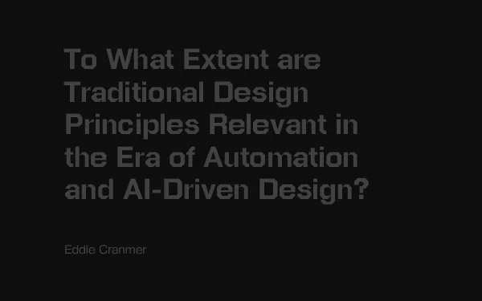
My dissertation explored the potential of AI in design, taking into account a variety of perspectives I aimed to build a comprehensive understanding of how AI could effect society.
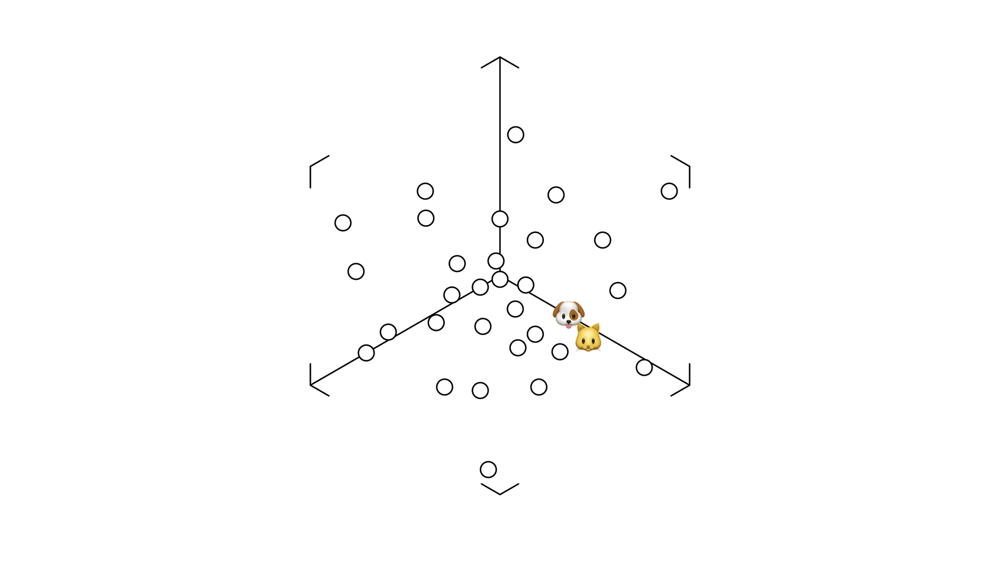
I created a video explaining the technical inner workings of AI with a focus on image generation. The video is intended to be accessible to a general audience, explaining the concepts in a way that is easy to understand to increase understanding of the technology.
Theorisation of a non-conventional generative system.
PAPA's Philosophy
Continuing from Unit9 I planned to use my final year to explore the intersection of design, programming and Artificial Intelligence. My goal was to learn and experiment before professional obligations dictate my practice. One of my interests is Artificial Intelligence and its relationship with design practices, therefore I initially considered an AI-driven approach to brand identity generation. There are several limitations to this, AI implementation requires powerful hardware, either in the form of a local machine or a cloud-based solution: Both of which present financial constraints. Furthermore, a non-human workflow risks alienating the community that PAPA's Park serves as AI-generated visuals often carry a sterile, impersonal aesthetic that would contrast sharply with the park's existing organic, community-driven identity. Despite this, I remained interested in using technology to assist with reinforcing a brand but in a 'friendly' way.
PAPA's Approach
Rather than creating a conventional, static brand identity, I wanted to develop a system that aligned with my skills and interests while addressing PAPA's Park's needs. The site visit reinforced the importance of social media in spreading the park's message, leading me to consider a system that balanced the demands of content quality and quantity.
A small, volunteer-run organisation like PAPA's Park lacks dedicated designers or social media managers. I hypothesised that a semi-autonomous generative system could be a fitting solution. My solution would theoretically encode visual principles into an interactive tool, ensuring aesthetic consistency. Whilst different to traditional brand identity deliverables, the framework itself provides recognisable, structured outputs, grants the community power over their content and operates based on parameters: The same way a designer may work under brand guidelines.
Primary and Secondary PAPA's Research: Exploring how colour and basic form can reinforce identity.
A defining characteristic of PAPA's Park is its deeply rooted community spirit. The park was reclaimed by residents in 1996 to prevent its sale to developers which reinforces the importance of prioritising a grassroots aesthetic over corporate-style branding.
Primary Research

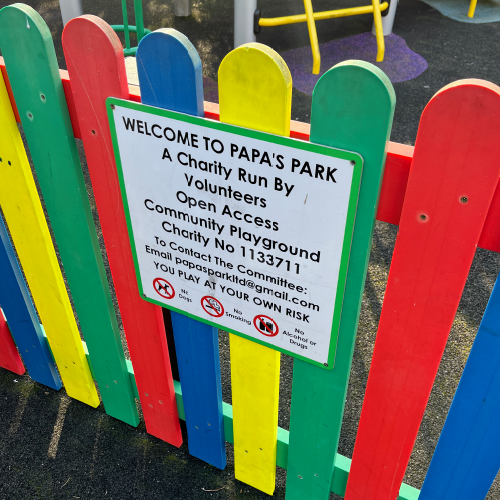
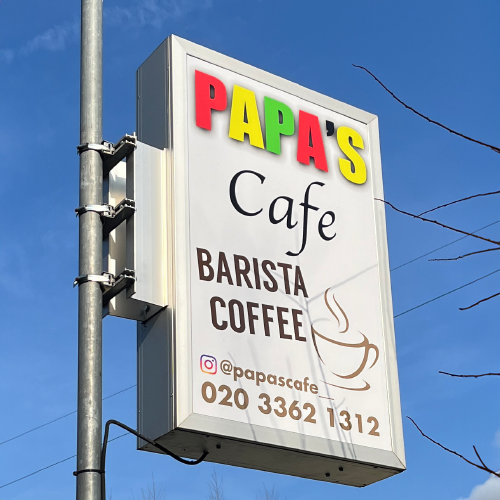
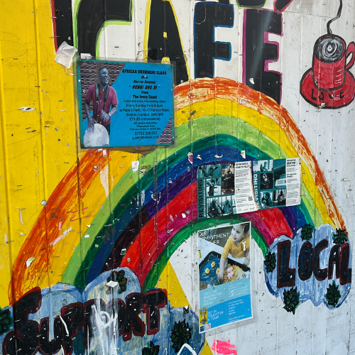
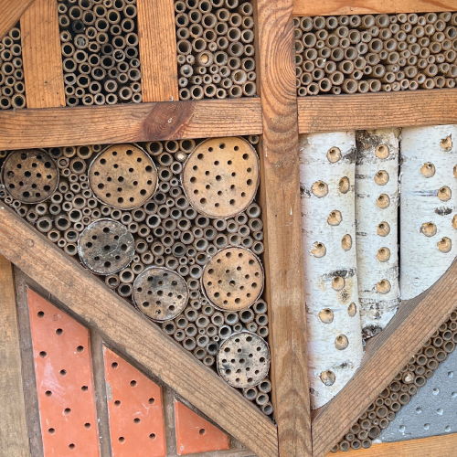
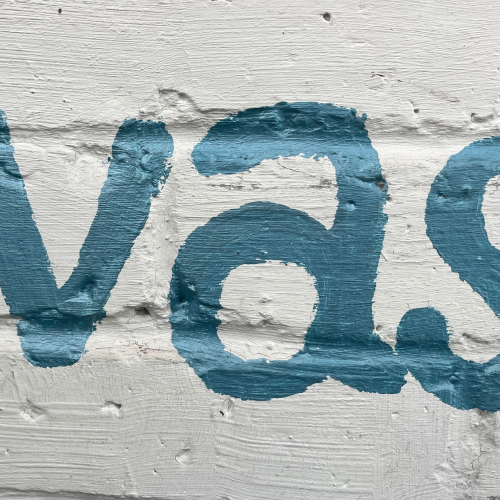
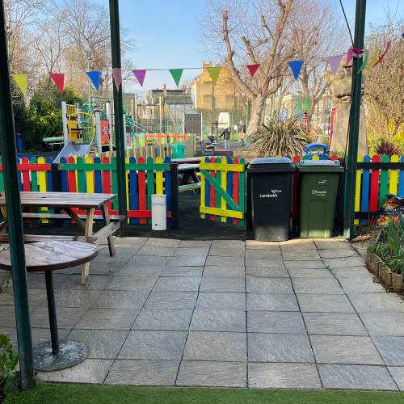
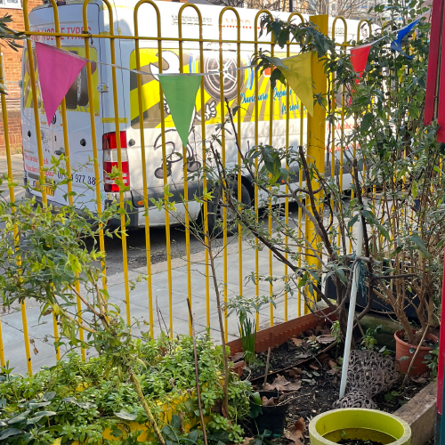
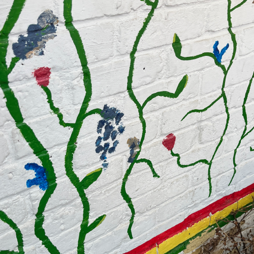
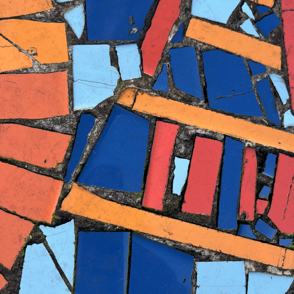
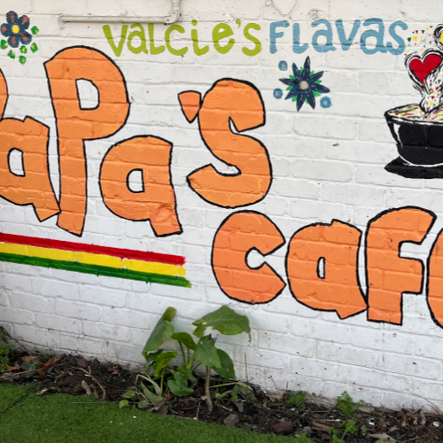
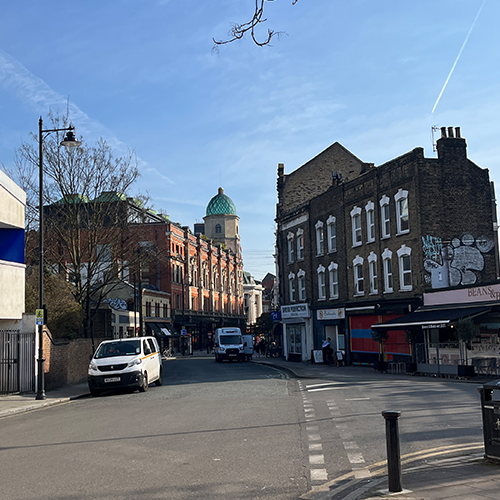
On the site visit, I noticed the visual and sonic vibrancy of the park. The environment was textured, with a mix of mural art, mosaic work and hand-painted signage. Traditional brand identities rely on persistent visual conventions: consistent logos, controlled palettes and uniform typography. Applying such an approach to PAPA's Park felt counterintuitive. The existing design elements, though lacking refinement, embodied the park's essence in a way that professionalised design might suppress. This reinforced my belief that strict adherence to conventional branding principles could dilute the authenticity of the space.
Secondary Research
Social Media Templates
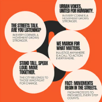
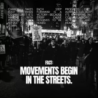
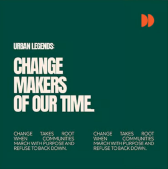
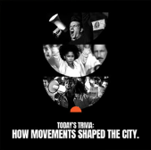
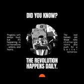
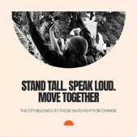
The heavy discussion of social media influenced me to explore social media templates: Having a consistent format for posts would allow the content to be cohesive regardless of the content. Furthermore, brand elements could be seamlessly integrated into the templates, reinforcing certain elements of the identity. This is a very simple implementation of aforementioned themes but would be an effective avenue to explore.
ECI
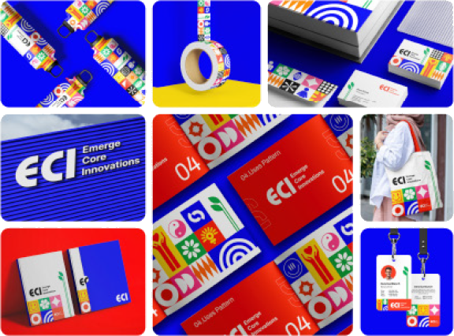
This example represents how colour can reinforce brand recognition. Whilst the ECI logotype is not representative of the themes of PAPA's Park, the rest of the brand identity follows principles that could be transferable. Firstly, specific shades of colour with consistent typography (content, colour and font) causes the user to associate colours with the brand. I believe this technique is particularly applicable to PAPA's Park being that colour was one of the few consistent visual properties. Within this framework there were multiple art styles and different types of equipment; colour unites. Secondly, the iconography encapsulates both childhood and adulthood in the way it uses basic shapes. The minimalism of the icons give them a mature feel whereas their simplicity is reminiscent of the Square Hole Game, representing childhood.
Abi Market
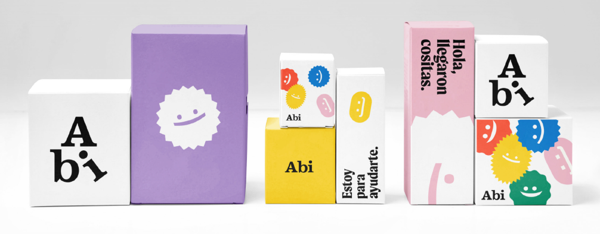
Abi Market exemplifies how themes of childhood can affect a brand identity without making it appear unprofessional. The logo itself was inspired by stacked school letter cubes and the playful illustrations/ icons convey lightheartedness. The chosen colour palette "reflects the diversity of tastes, preferences and personalities:" I plan to reverse this methodology, using colour and other minor elements to ensure consistency. I particularly appreciate the shapes used in the identity, their simplicity resembles stickers/ badges and therefore childhood (without appearing messy).
Just Practicing Typography
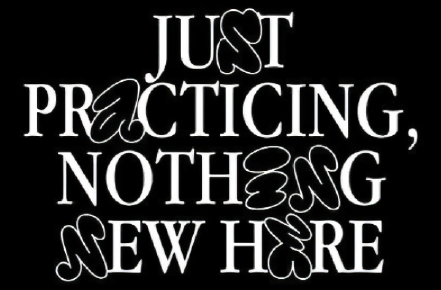
This typographic example explores how font choices can be used to represent community. Each font individually would convey very different meanings, however when merged, the more playful graffiti-like font makes the Garalde Old-style type feel more cheerful. The example demonstrates how different fonts can be used to represent diversity, the balance of playful to serious letterforms can also be altered depending on the type of message being conveyed.
Yard Work
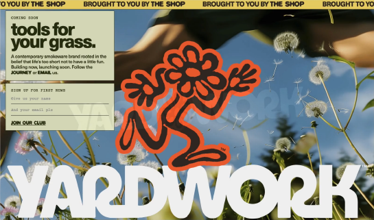
Similarly, the juxtaposition of the playful icon with the sans-serif font exemplifies how contrasting visual styles can be representative of variance individually and contrastingly.
Stratford Community Sauna
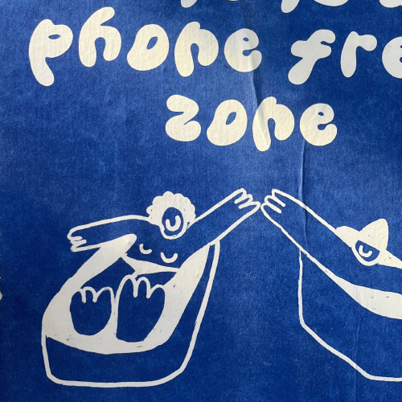
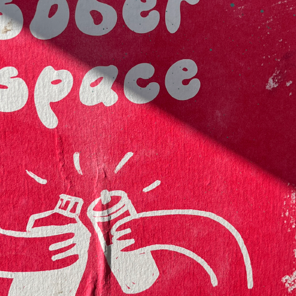
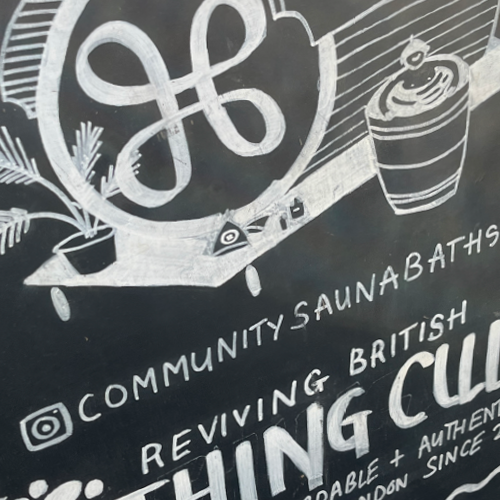
I organically found the design system for Stratford Community Sauna which I think aligns well with my envisaged aesthetic and similar community spirit of PAPA's Park. I think the friendly illustrations and rounded typography provide a calming feel. Despite the cartoonish nature, the design elements appear playful rather than childish. I would like to achieve a similar feel with my outcomes being that the design language is friendly but not overly juvenile.
Reading
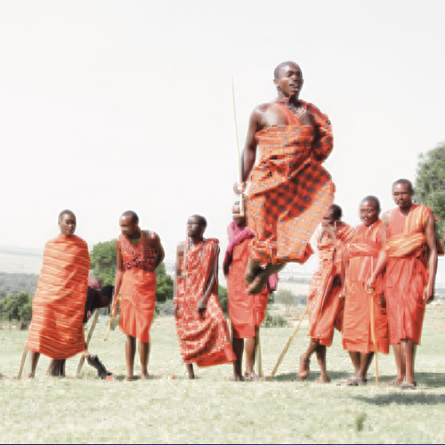
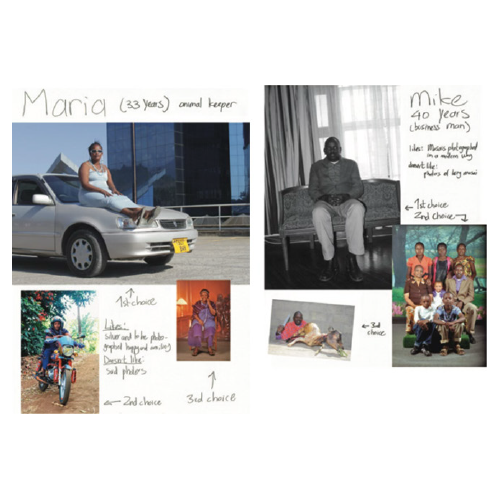
The Headless Brands reading allowed me to reconsider the importance of narrative in branding. Whilst cryptocurrency operates very differently to PAPA's Park it is similar in the sense that value is derived from its community. Without community backing, cryptocurrency and PAPA's Park would lose all of its value. Community value is incredibly topical and it seems fitting that the users of the park dictate the branding of it. Ruben Pater discusses accurately portraying people in his book the Politics of Design: The Maasai Ethnic Group are conventionally portrayed in traditional Kenyan and Tanzanian outfits but when asked how they would like to be represented they appeared in a much more modern way. It is important to consider the input of the community but it is equally important not to put too much power in the hands of non-designers: This is why parameter control must be considered.
Initial outcomes include a variable typeface based on age and a shape generator to represent the park whilst maintaining visual cohesion.
Initial Ideas
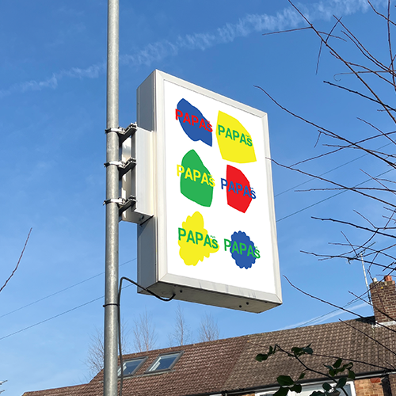
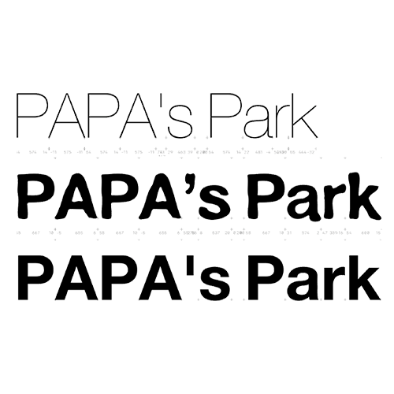
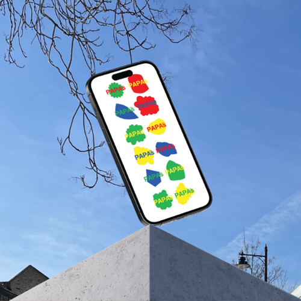
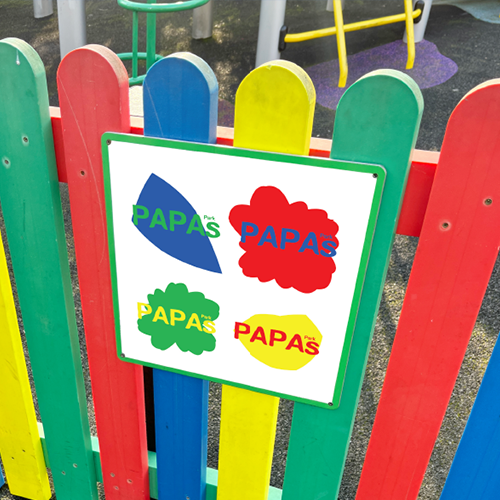
One of my earliest ideas was a variable typeface that evolved between states representing different age groups. Children, the primary users of the park, are playful and energetic whereas adults bring a sense of calm authority. By designing two extreme sets of letters, one chaotic and the other refined, I could transition between them to reflect the community.
While this approach aligned conceptually, feedback revealed that the early iterations lacked specificity to PAPA's Park itself. The age-based transition was an interesting design problem, but it did not fully encapsulate the park's identity beyond a generalised idea of user demographics. This led me to explore additional parameters to better integrate the typography with the park's distinct characteristics.
I also worked on a system to generate shapes autonomously. Platforming from my research into the effectiveness of reinforced basic form and colour I experimented with an autonomous shape generator. My initial outcomes consisted of of the combination of my dynamic text and shape generations.
Process
p5.js Implementation
I used p5.js and the beginShape() function to draw custom shapes. The javascript library involves predefined shapes like circle(), rect() and triangle() however these primitives did not include enough customisation for my requirements. The beginShape() operation allowed me to control the shape down to the location and number of points: This methodology is much friendlier for a flexible system.
p5.js Troubles
Throughout the process I have encountered many issues with the p5.js shape and text generation. Creating assets individually becomes problematic with the introduction of layering.
One particular problem has been the 'smoothness' parameter. Initially, I thought the implementation of smooth corners would be relatively easy: This assumption was based on how Adobe Illustrator handles rounded corners. Unfortunately this was not the case and I explored many options on how to achieve a more rounded appearance. My initial approach involved the bezier() function where multiple anchor points would be used to draw the curves. Unfortunately I could not achieve a consistent result using this. I decided to use an approach I was familiar with from Photoshop, by blurring the entire canvas and thresholding it I could round corners. Again, however, I could not get this implementation to work.
Eventually I found this project which helped me overcome this hurdle which is how the corner radius functions now. The sample code was a very simple implementation for one 90 degree corner of a custom shape, my program is far more complex so I had to add additional parameters to ensure the corner radius did not extend past the corner itself.
Another problem I had was exporting animations in GIF format. I was able to incorporate motion in the program which I was very pleased with however I was unable to find the solution to export it. I think this project has shown a lot of promise, however it's starting to become clear that while there is potential, it may be wasted potential as the requirements of PAPA's Park are specific.

Programmatic Design and Refinement
A key theme in my design process was the intersection of automation and creativity. Inspired by generative branding approaches—such as Pentagram's work on Cohere, I explored how an interactive system could empower PAPA's Park's volunteers to generate unique yet cohesive content.
Initially, I experimented with a freeform approach that gave users large amounts of control over variables. However, feedback again revealed that this resulted in inconsistencies that undermined brand cohesion. I realised I was designing for a designer, rather than for PAPA's Park's non-expert users: Simplification was necessary.
A crucial turning point was the idea of 'preset moods.' Instead of sliders controlling abstract typographic properties, I introduced broader emotional categories—such as 'playful,' 'calm,' or 'energetic' that adjusted parameters automatically. The tool became more accessible and ensured outputs remained visually coherent.
Additionally, I considered the integration of environmental variables, such as seasonal and weather-based adjustments. Given that the experience of the park is strongly tied to its environment, it felt appropriate for the generated content to reflect real-world conditions. This also allowed information to be conveyed subconsciously, reflecting PAPA's ever changing nature without compromising visual consistency.
Colours
Colours were the properties I was able to establish first. I used colour as a constant amongst the ever-changing visuals. I decided on specific shades of red, green, yellow and blue as these appeared consistently in the park and are representative of childhood and play. Whilst the park is not only for children, vibrant colours are also appealing to adults and they reinforce the energetic atmosphere of the park.
Seeing the colours in a practical context (Instagram mockup) reaffirmed my decisions and grounded the identity. I did consider removing one of the colours for simplicity but reducing parameters would reduce the complexity: Colour is what makes the shape generator interesting.
Seeing the colours laid out in this format is reminiscent of Microsoft, demonstrating that simple ideas have nearly always been done before. I later had to consider how to implement colour so as not to plagiarise.
The centerpiece of my outcome: A shape generator with changeable settings.
PAPAs.app
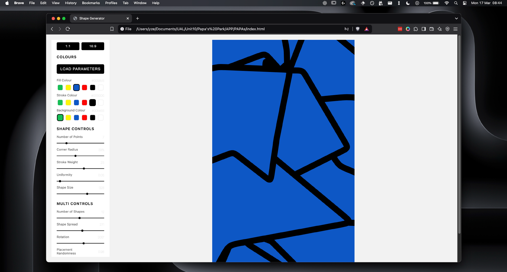
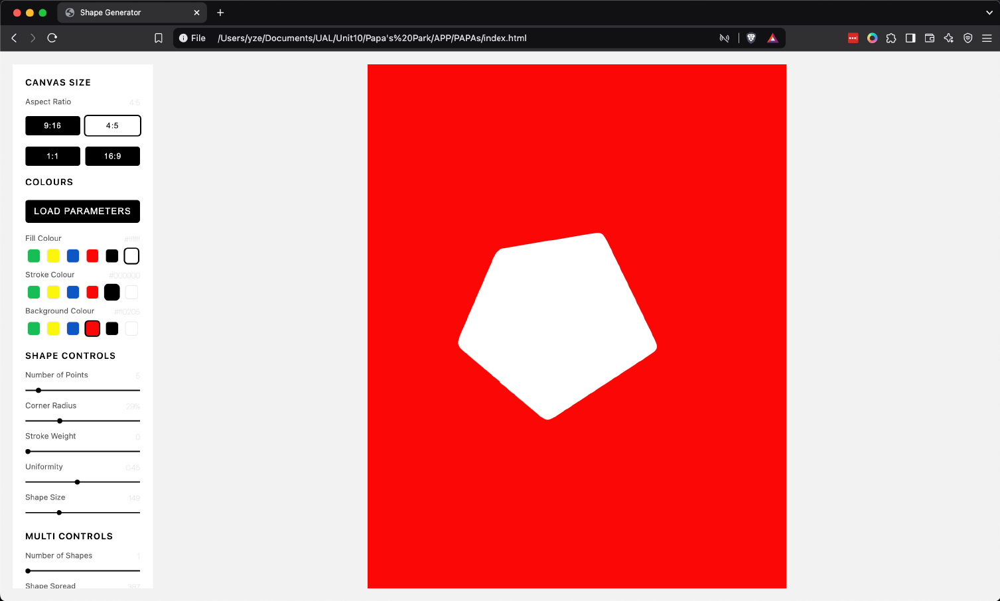
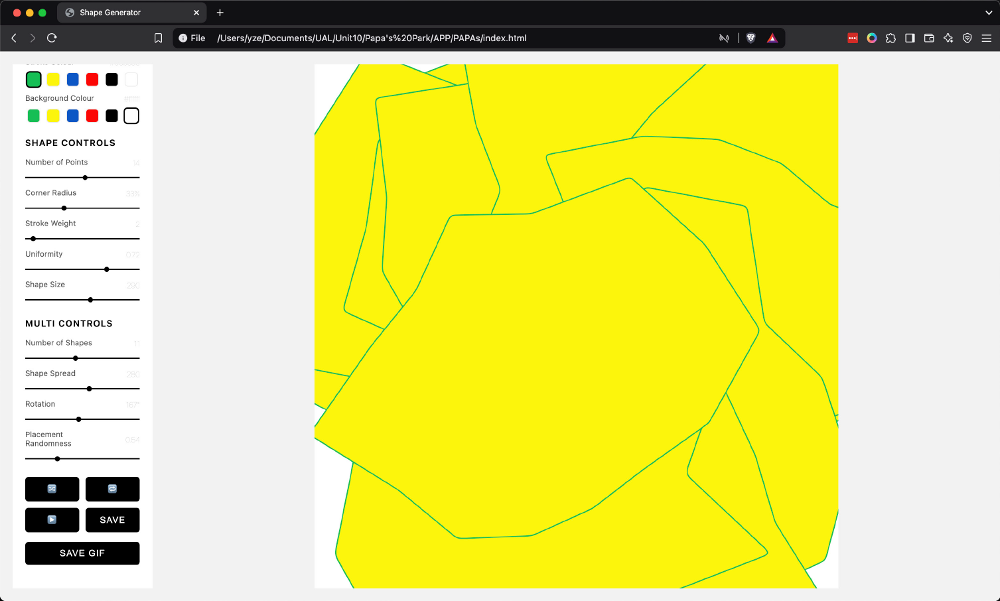
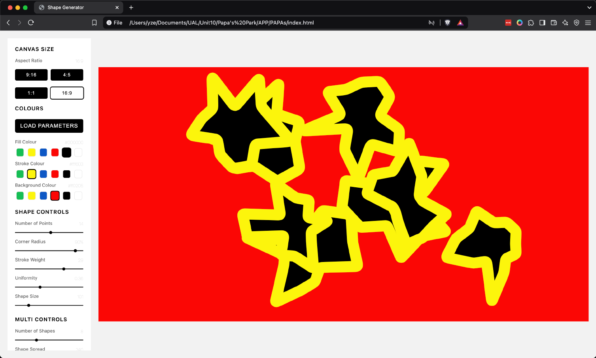
I created a fully fledged asset generator with the intention of using it for social media purposes. The intention was to create a system that could be used by the park to convey any information necessary and therefore did not create any system to create specific imagery.
The main manifestation of this ideology is through the weather controls where a predefined set of parameters is applied to the system to convey specifics. This distances the user from complex design systems without removing their creative control fully. Additionally, it is the responsibility of the user to choose the context for the graphic which is the most important design decision.
The option for the user to take complete control remains but this is more of a hidden option that only an experienced user would explore. I feel that in systems like this it is important to introduce an element of progressive exposure: If a tool is not intuitive enough it will never be used, if a tool is not complex enough it will never be learnt.
Feedback
Sharing the outcome with people revealed some positive points and some negative. The tensions between the intentions of the system and how it was actually received arose. Controls were not immediately understood; icons were too abstract. some connected the aesthetic and energy of the app to PAPA’s Park. The colour palette and shapes caused one person to draw comparisons to the mosaics which was a great success. There was some appreciation that the system didn’t feel overly polished.
For less tech savvy users, the concept and interface raised some usability concerns. Some struggled with the intention of the project and didn’t understand how to control the outputs. Some people said they could see value in the system.
Suggestions included the option to upload photos or adding text could have added personalisation. One concern about long term feasibility was raised, questions of maintenance and teaching other volunteers how to use the system.
This highlighted a blind spot in my philosophy: value is measured in what the system can do now and in the future. Overall, the distinct approach was appreciated but not understood fully. It surfaced that success depends less on technical complexity and more on its intuitiveness, context and practicality
Posters
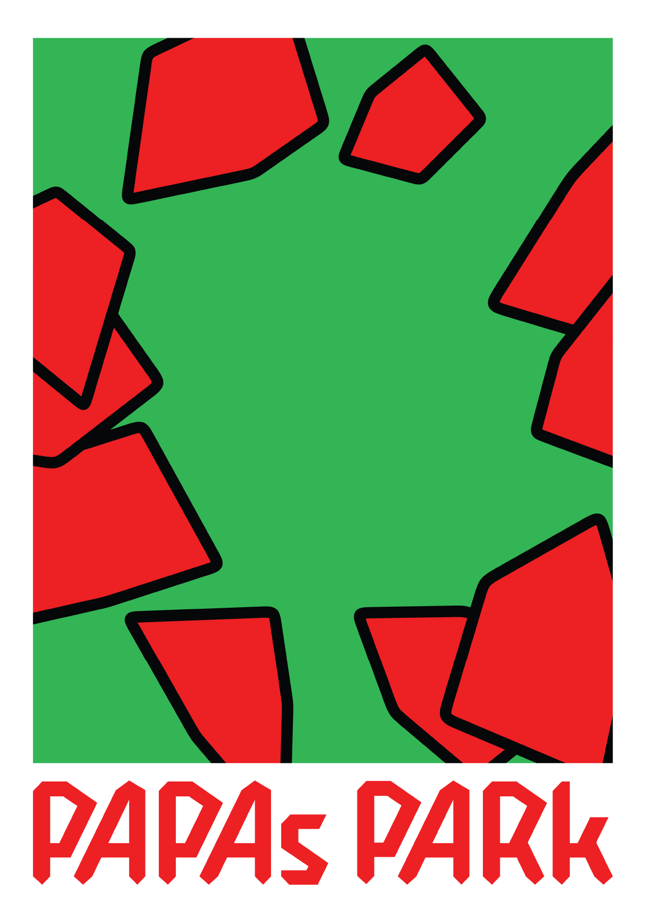
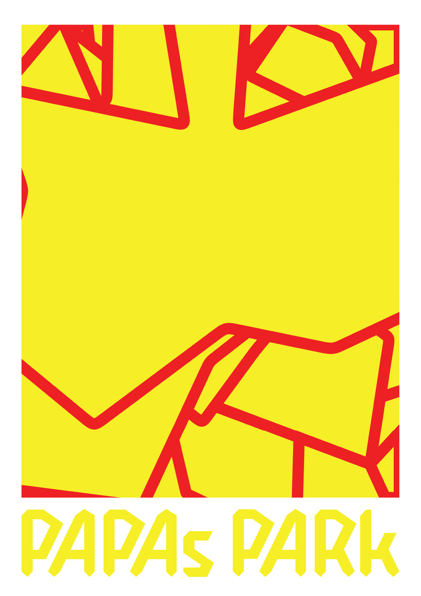

I created a series of abstract posters using the outcomes of the generator to demonstrate various outcomes can maintain visual connection without looking identical. Furthermore, the abstract nature of the shapes allows the user to impart their own meaning on the image, adding visual intrigue.
It is my intention that the content creators at PAPA's Park will decide the level of abstraction based on what they are trying to convey: A post exclusively for the algorithm can afford to be more abstract whereas an announcement requires direct communication.
Development of an icon set including 3D mockups to contextualise.
PAPAs.svg
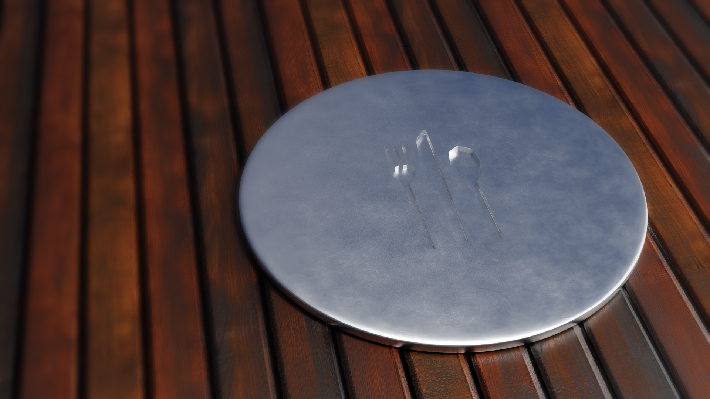
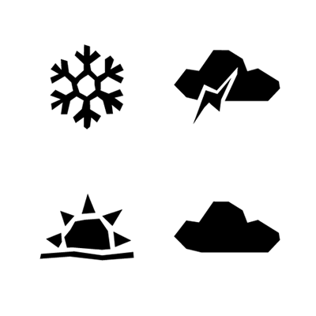
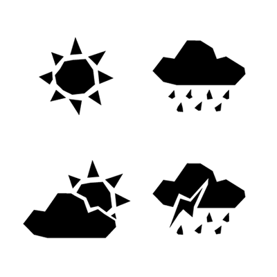
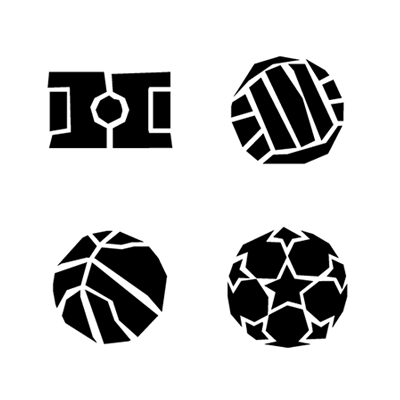
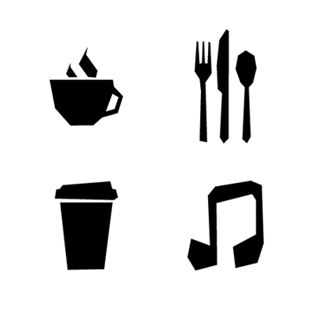
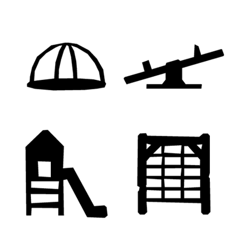
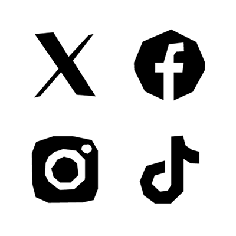
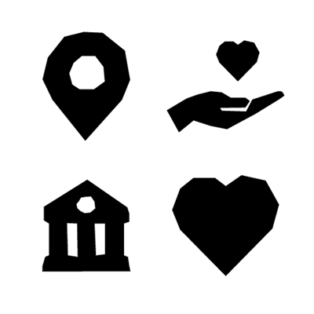
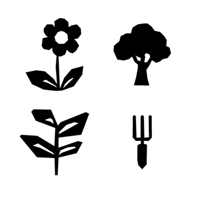
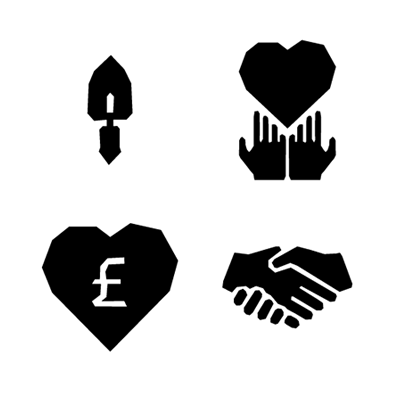
I created a set of icons for the park in a similar style to my shape generator. I am fond of the partially messy feel of the generations and icons as the aesthetic embraces imperfections. PAPA's Park is never going to have the best equipment on the planet or the most money but there's every chance it has the best community. Leaving the 'human touch' visible in the brand identity was very important to me.
I tried to create a variety of icons that would have practical application both physically and digitally. I envisaged future use cases for both the park and the development of the application should I continue working on it.
Whilst designing the icons I decided to apply a similar methodology to typography as an experiment. I found that I could efficiently create letterforms that mimic the style of the icons and shape outputs and made a variable font. Because of the fewer nodes I was able to make the fonts compatible very easily.
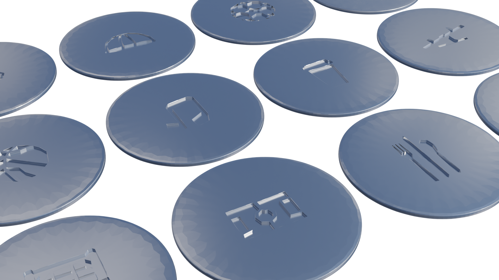
I created a series of counters for the park that could be used as labels throughout the park. The most obvious application of this would be the toilets but the minimal form could guide users around the park, encouraging them to take full advantage of the facilities.
Blender Development
.enter
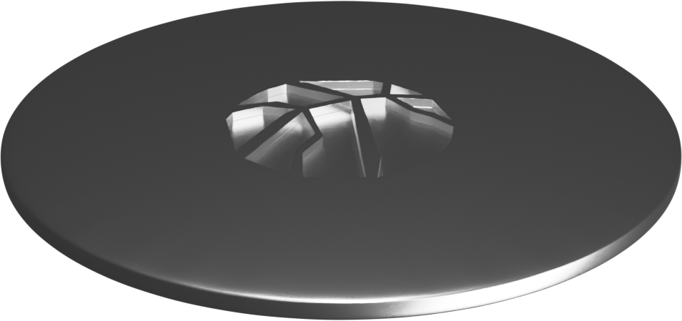
I developed the material and texture of the counters in Blender with a series of geometry and texturing nodes. The purpose of the mockup was to ground my outcome in the real world: It was imperative that the images had imperfections as they would in reality.
I also created some realistic mockups of the counters with wooden backgrounds, in line with the new cafe's CAD renders.
Development of logotype and matching typeface.
PAPAs.logo


Building on my previous ideas I refined my generative system. I moved away from the age-based typography, feeling it was too broad to aim to encapsulate both PAPA's Park specifically in conjunction with the concept of ageing. I believed the identity had become very conceptual and required a more conventional approach before re-evaluating generative systems.
I created a logotype that aligned with the ideas of basic form and colour that I had explored, taking inspiration from the mosaic shapes and fence structure present in the park. I then used this as a platform to create an entire font.
PAPAs.ttf


My initial plan was to create an entire typeface (including numbers and ligatures) however after considering the feasibility of this I reverted to basic shape generation. During my experimentation I discovered textToPoints() in p5.js which seemed like the perfect solution to my problem. If I was able to alter the geometry of the font programatically I would save a huge amout of time by not dealing with each letter individually. Unfortunately I was not able to use this function as the way the letters were broken down did not create a closed loop, leaving part of the letters completely open and also removing all the kerning data from the original font.
I originally decided to use the SF Pro Rounded font family to represent PAPA's Park. The reasons for which are that the base SF Pro font is hyperlegible without the direct corporate connotations of Helvetica. Going for the rounded version of the font allows the typography to appear friendlier, contrasting the sharp corners of the shapes generated. Unfortunately SF Pro is not available for commercial use and I have instead chosen to use Roboto Rounded for the aforementioned reasons. Unfortunately this particular variation lacks the amount of styles that SF Pro has.
I went on to develop a variable font based on the logotype I had created. Whilst the font is not my proudest work it builds on the aesthetic created in the logotype, reinforcing visual language and brand recognition.
Further examples of the brand identity in context.
Application

The project outcomes were shaped around the needs and personality of PAPA’s Park: a vibrant, community-run space with deep grassroots energy. Rather than a rigid brand identity, the flexible system aims to empower volunteers to generate assets with ease while maintaining a coherent visual language. The approach responds to the park’s lack of a formal design team and entrusts community engagement.
The generative identity system reflects the park’s ever changing nature: The park’s loud, colourful and unpredictable energy informed visual decisions. The core palette of red, yellow, green and blue sampled from existing features, and common in children’s environments, support an atmosphere of joy without alienating adults. Shapes were deliberately imperfect to echo the park’s handmade textures and avoid the sterility of corporate branding.
Typography presented more of a challenge, initially developing a variable typeface that lacked specificity. I iterated to match the visual energy of the park by generating shapes and icons.
Accessibility was a key focus but early versions of the tool offered too much freedom. The introduction of preset moods helped non-expert users produce aesthetically consistent outcomes without needing to understand the underlying systems. This also allowed for subtle contextual responses, such as adapting graphics to reflect weather or seasonality.
Some design choices were less successful: Abstract posters, while visually interesting, lacked direct connection to the park and did not address the park’s day-to-day communication needs. Additionally, the tool was primarily geared towards digital use. Although the goal of the system was weighted towards quantity over quality, applications like physical signage are not applicable to the tool: Such design requires a one-time, highly specific outcome.
The system supports PAPA’s Park by offering a structure that reflects its character without overpowering it. It prioritises flexibility, community participation, and visual continuity but perhaps the project should have been more weighted to the targets of the pitch. Had this system been pitched to a group of young, tech-savvy people looking to completely revamp the social media presence of PAPA’s Park I may have been able to communicate my concept more fluidly. I think friction stemmed from the expectations of the PAPA’s Park committee in comparison to the system I was proposing. Retrospectively thinking I did manipulate the brief to fit my interests and development. Had this been a paid client project I would have adhered more closely to the original brief and developed a conventional design identity with graphics created for highly specific use cases. My system begins to solve the social media system but ignores the more pressing issue of informational, context specific graphics. In hindsight, I think this is the primary reason I struggled to communicate effectively through the pitch.
PAPAs.pitch

I found it difficult to condense my project and ideas into a format that would be understandable by someone with no technical knowledge of graphic design or creative coding. Whilst I believed the concept was conveyed without complex terminology, later feedback explained my ideas could have been simplified further.
I am pleased that I was able to convey my outcome as something useful to PAPA's Park. I expected feedback to be quizzical as it was in the first presentation but direct feedback from Dyffed and the team was that my idea had developed since the last pitch and I credit this to the distillation of my ideas and the practical examples like the icon set. Whilst the project philosophy was clear to me immediately I was not able to convey this convincingly in the first meeting, I was glad the PAPA’s Park team could understand my perspective as the project developed. Importantly, I must continually reflect on how projects would come across to someone who has no knowledge of it. I typically assume understanding of my project but it’s often the case this assumption is wrong.
Final reflection on the project and its outcomes.
Reflection
Realisation and Reflection
Over time, I realised that my approach was not perfectly aligned with PAPA's Park's immediate needs. While my project demonstrated potential as a generative identity system, it was too complex for direct implementation. My initial assumption, that the branding could emerge entirely from an automated system, proved unrealistic. By the end of the process, I had reverted to a more traditional design approach, using my tool to generate assets rather than as the sole mechanism for brand creation.
While the system did not make a designer redundant, it did provide valuable assets that informed my final deliverables. The shapes and typography generated by my program influenced my physical branding outcomes, reinforcing the visual language while allowing for a human-led refinement process.
One of my greatest challenges was developing a logotype that truly represented the park. Much of my focus was on the generative system, leaving limited time for logotype refinement. While my final logotype integrated the visual tropes of my brand identity, I struggled to directly connect it to specific aspects of the park's environment.
Whilst the logotype undoubtedly suffered due to the time restrictions, outcomes like the poster or the icons would have taken far longer to realise. Although the posters are more abstract, they are still visually interesting and the ability to change the canvas in real time is an unusual ability. The abstract nature of the shapes created allows the viewer to imagine the scene, the one constant is that the canvas is always loud, vibrant and unpredictable just like PAPA's Park.
I think, as is the case with most of my work, I envisaged the outcomes almost exclusively for web based views. I don't think this is a huge problem in this context being that I was focused on social media however an approach that involved a physical context in mind would have grounded the project more. This would have nullified the need for such an adaptable system however, which is one of the most interesting aspects of the project.
Authorship
Some ethical questions revolving around control include the definition of creative freedom in this context: The generator offers some creative freedom, but that freedom is bound by my parameters. Although users could make choices, they were shaped by my assumptions about what PAPA’s Park should look like. The intention behind this was to ensure good outputs but this enforced aesthetic forces my perception of PAPA’s Park rather than giving the user true creative freedom. If I was to continue this project I would sit down to receive more feedback from the users of PAPA’s Park to grasp their understanding. My perspective as an outsider may have not been accurate enough to create a graphic system for the community. This raises questions of authorship. My assumptions were embedded into code, making me an invisible author. This questions if the system truly offers empowerment or just the impression of it.
Conclusion
Through this project, I gained a deeper understanding of the balance between automation and human intervention in design. While my approach may have been overly ambitious given the project scope, the exploration reinforced key lessons about community-driven branding. Had this been a commercial task, I would have taken a more conventional approach, but my goal was experimentation and skill development rather than immediate applicability. One piece of feedback I received was that the project reads like an "academic prototype rather than an actual tool" which summarises my approach well: In attempting to create something unique I may have lost touch with reality.
Ultimately, the project highlighted the tension between rule-based design and organic identity formation, aligning with the broader themes of my final year work. I set out with the intention of making a system that would make my life easier, however the time it took to write the code that generates shapes was inefficient compared to the time it would have taken to draw them in Adobe Illustrator. I was particularly interested in a simple aesthetic: Perhaps a simple process would have been a better choice.
Although the automated system did not replace traditional branding methods, it provided a unique framework for content creation that aligned with PAPA's Park's dynamic, community-led ethos. I believe generative systems will continue to be integrated into graphic workflows however there is friction between human perception and machine output. A branding project orbits human perception and is only successful if the human makes subconscious connections. Continuing my thinking from my dissertation, I believe generative systems (AI or not) will be less relied upon compared to other outlets of design such as advertising: In a logo every detail is considered because of the simplification process whereas in a poster, where the users attention spread across various elements, the nuances only a human could prove successful are less important.